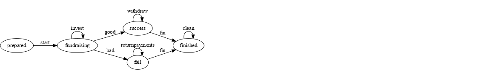

Table of Contents
Intro
Здесь будет рассмотрена архитектура децентрализованной сети, чтобы понятным способом объяснить самому себе (и тем, кому это может пригодиться), как все это работает (и как должно работать).
Планируется рассмотреть следующие моменты:
- Сценарии использования
- Действующие лица (пользователи, кошельки узлы, контракты, транзакции) и сопутствующие термины с объяснениями
- Сущности и операции надо ними
- Мотивация и вознаграждение
- Алгоритм достижения консенсуса
- Сравнение с другими проектами
Сценарии использования
Все нужно проектировать сверху вниз, за исключением фундамента, с которого нужно начинать (c) Алан Перлис.
Здесь рассмотрим самые простые сценарии, для которых может быть использована сеть, что автоматически приведет нас к тому, кто её использует и каким образом. Сценарии нужны чтобы понять взаимосвязи между объектами в системе.
Передача денег
Алиса хочет передать Бобу некоторую сумму amount. Для этого она использует
программу Кошелек, которая создает Транзакцию.
При создании новой транзакции типа trntransfrer Алиса должна заполнить поля транзакции:
- sender : hash(publickey)
Алисы - sendersign : signature(этатранзакция)
- recipient : hash(publickey)
Боба - vid : array of {vid:номинал}, где vid - это идентификатор токена, а
номинал- его номинал. - previoustid : array of {tid:hash}, где
tid- идентификатор транзакции, аhash- её хэш. Это массив ссылок на транзакции, в результате которых кошелекАлисыполучил эти токены. Порядковый номер пары в массиве НЕ соотвествует порядковому номеру массиваvid, (в общем случае), но это может зависеть от способа реализации. - cid : hash(contractcode) - ссылка на контракт, который инициировал эту транзакцию
- typetrn : enum(trncreate, trndestroy, trntransfer, …) - тип транзакции
- tidref : поле для ссылки на комиссионную транзакцию или для ссылки на транзакцию, инициировавшую эту (нужно для смарт контрактов)
- ext : ? - расширение, которое не помещаются в блокчейн (резерв на будущее)
Возможные типы транзакций:
- trncreate - транзакция создания токена
- trndestroy - транзакция уничтожения токена
- trntransfer - транзакция перевода токена
- trnexchange - транзакция обмена/размена токенов
- trntransfermy - транзакция перевода токена между своими кошельками
- trncomission - комиссионная транзакция
Алиса подписывает транзакцию ([TODO:gmm] - ext не входит в подпись но пересылается
отдельно?).
Одновременно с этим создается Транзакция коммиссии, ссылающаяся на базовую
Транзакцию ([TODO:gmm] - какое поле) на адрес ([TODO:gmm] - какой?) См. раздел
Начисление комиссии
[TODO:gmm] - Рассмотреть поля Транзакциии комиссии.
В комиссионной транзакции хранится ссылка на исходную а в исходной - на коммиссонную (в
поле tid_ref). Обе транзакции подписываются Закрытым ключом Алисы~ и посылаются на
Пользовательский узел, а Файл токена на Системный узел.
Файл токена замораживается на Системном узле в криптоконейнере, а информация о нем
сохраняется в БД, которая распределена между системными узлами. Когда Боб увидит
Транзакцию в свой адрес в сети, он пойдет на любой Системный узел и тот даст ему
адрес того системного узла, с которого Боб сможет получить Файл токена.
Кошелек поддерживает соединение минимум с одним Пользовательким и минимум одним
Системным узлом. О том как он их получает при старте раздел Старт кошелька.
Если токен нужно разменять, то формируется транзакция на обмен, отправляется в сеть, токены уходят, после подтверждения транзакции новые токены можно забрать с системного узла. Эта транзакция оплачивается минимальной комиссией, чтобы транзакции на размен не заспамили сеть.
На Пользовательском узле транзакция будет верифицирована: он должен проверить
- правильность структуры транзакции
- верна ли подпись отправителя
- принадлежат ли токены этому кошельку (для этого узел должен рекурсивно проследить все
транзакции на которые ссылается поле
previous_tid) - не потрачены ли они уже (для этого узел должен выполнить запрос к своей БД на поиск
дочерних транзакций относительно указанных в
previous_tid)
Если транзакция верна, Пользовательский узел добавляет к транзакции
- идентификатор транзакции
TID, который состоит из идентификатора пользовательского узла, который принял транзакцию (NID - NodeID) и времени, когда транзакция была принята. ЭтотTIDотсылаетсяКошельку, чтобы он мог увидеть эту транзакцию в сети. Кошельку, если он не доверяетПользовательскому узлустоит следить за транзакцией через другой узел, не тот, которому транзакция была отправлена. - Время приема транзакции
time_trn(время должно быть синхронизировано на всех принимающих узлах). [TODO:gmm] - Тут есть вопросы, сейчас время заполняет пользователь.
Пользовательский узел добавляет обе Транзакции в пачку, которую отправляет на все
узлы G-нод. Существует минимальный временной интервал, в которой пачка (если она не
пуста) должна уйти на G-ноду. О том как узел может стать G-нодой написан раздел
Становление G-нод.
На G-ноде Транзакция попадает в Мемпул, над которым происходят раунды
голосования:
- Выбирается спикер. Все G-ноды [TODO:gmm] как-то узнают кто в данном раунде спикер.
- Спикер выбирает из мемпула транзакции, формирует список их идентификаторов, подписывает и рассылает этот список всем узлам G-нод.
- Все G-ноды проверяют наличие этих идентификаторов у себя в мемпуле, при необходимости запрашивая эти транзакции и формируют лист голосования, где голосование - это битовая шкала, где единицами обозначены номера тех транзакций, которые эта G-нода считает валидными. Если это цепочка транзакций, сформированная смарт-контрактом, то голосование производится за всю цепочку как за одну транзакцию. После этого голосование рассылается каждый-каждому.
- После получения всех голосований из них формируется матрица и те транзакции, которые подтверждены двумя третями G-нод, формируют еще один лист голосования - [TODO:gmm] - зачем? см. Tendermind
Узлы G-Node не принимают транзакции от клиентов (им и так хватает работы). Транзакции от кошельков принимают «обычные» узлы (пользовательские и системные). После успешной предварительной проверки структуры транзакции узел отправляет ее на ближайший G-Node. На каждом узле G-Node ведется копия ТАТ (таблица актуальных транзакций) – это пул транзакций узла.
Узел G-Node, получая транзакции от «обычных» узлов, проверяет ее и помещает в ее в свой пул.
Процесс подтверждения транзакций состоит из так называемых раундов. В течении одного раунда происходит подтверждения одного набора транзакций. На каждый раунд из списка узлов G-Node выбирается один узел, который называется SPEAKER. Выбор очередного SPEAKER происходит по алгоритму Round-Robin algorithm.
Узел выбранный SPEAKER в своем раунде формирует список транзакций из своего пула транзакций. Затем он рассылает по протоколу gossip (протокол сплетен) этот список всем узлам G-Node. Узлы получив этот список на 1 шаге проверяют все транзакции на целостность и непротиворечивость и формируют список сообщений CHECK YES или CHECK NOT для каждой транзакции из списка и рассылают список ответов каждому узлы G-Node. На 2 шаге каждый узел G-Node подсчитывает сообщения CHECK YES и CHECK NOT для каждой транзакции из списка и формирует новый список ответов для каждой транзакции – PRECOMMIT YES для транзакций, которые набрали более чем 2/3 сообщений CHECK YES и PRECOMMIT NOT для транзакций, которые набрали менее чем 2/3 сообщений CHECK YES. На 3 шаге каждый узел G-Node подсчитывает сообщения PRECOMMIT YES и PRECOMMIT NOT для каждой транзакции и принимает решение о добавлении в граф транзакций, которые набрали более чем 2/3 сообщений PRECOMMIT YES или решение об удалении транзакций из пула, которые набрали менее чем 2/3 сообщений PRECOMMIT YES. Каждый узел G-Node работает со своей копией графа и своим пулом транзакций.
После внесения транзакции в граф узлы G-Node рассылают внесенные транзакции своим соседям, не входящим в список G-Node, которые вносят ее в свой граф не проверяя. Таким образом в сети ведется граф, вершинами которого являются подтвержденные проверенные транзакции.
После обработки всех транзакции из списка, начинается новый раунд, на который выбирается новый SPEAKER по алгоритму Round-Robin.
Когда Системный узел принимает токены: После приема токенов Системный узел помещает
их в криптоконтейнер – это зашифрованный файл с именем, соответствующим адресу
получателя токенов. После этого модуль должен сообщить всем другим Системным узлам
информацию что данные токены находятся у него.
После подтверждения транзакции кошелек-получатель должен обратиться к одному из системных узлов, которые есть в его таблице адресов, получить адрес системного узла, на котором заморожены его токены. Затем кошелек-получатель соединяется с этим системным узлом и забирает свои токены.
[TODO:gmm] - Зачем нам SSL? Чтобы регистрировать кошельки и отзывать кошельки, в будущем возможно для KYC.
[TODO:gmm] - Что с блокчейном архивного DAG-а? Блок формирует спикер, как и DAG, голосование такое же, см схему в папке Visio.
[TODO:gmm] - Как хранить смарты?
Старт кошелька
Базовые адреса - получение списка соседей.
Кошелек при старте обрабатывает файл инициализации, берет из него адрес системного узла (их там несколько), соединяется с ним и в случае успеха получает от него список адресов всех пользовательских узлов, о которых он имеет данные. Далее кошелек перебирает адреса пользовательских узлов в поиске ближайшего к себе. В идеале кошелек должен иметь несколько адресов пользовательских и системных узлов (например, по два адреса – основной и запасной). Но если ближайшим к кошельку узлом будет системный, то пользовательские узлы ему будут не нужны. На системные узлы кошелек будет отправлять токены для заморозки. Транзакции кошелек будет отправлять на любой (пользовательский или системный) ближайший узел.
Старт ноды
Модуль после запуска считывает из файла инициализации информацию о системных узлах (системные узлы всегда в работе – их работоспособность контролирует команда системы). После этого соединяется с одним из этих узлов и получает от него адреса всех узлов, которые в данный период времени являются G-Node.
Пользовательский узел должен иметь информацию о всех G-Node и о нескольких/всех системных узлах.
Системный узел должен знать информацию обо всех остальных системных узлах, а также о всех G-Node. Еще системный узел сохраняет информацию обо всех пользовательских узлах, которые к нему подключаются.
Узел G-Node должны знать информацию обо всех узлах G-Node. Идентификаторы всех узлов G-Node публикуются в блокчейне. Список узлов G-Node формируется как сопоставление списка из блокчейна и IP-адресов из таблицы SAT.
Надо проверить всю цепочку архивных блоков чтобы самостоятельно вычислить кипящий слой
Начисление комиссии
- 45% узлу, который принял транзакцию от кошелька
- 45% в равных долях на все узлы G-нод
- 10% на адрес любого системного узла (т.е.) системе
Комиссии рассчитываются путем анализа за определенный промежуток времени, а не в момент подтверждения. Если один из узлов G-нод вел себя злонамеренно, то в момент расчета комиссионного вознаграждения он не только лишается депозита, но и не получает эти вознаграждения.
Проверка баланса
Нода хранит состояние всех кошельков на которых есть деньги. Входящие транзакции изменяют этот баланс.
Становление G-нод
Мы храним список текущих G-нод в storage соответствующего контракта. Чтобы узнать
текущие G-ноды любой контракт может запросить у ноды содержимое ключа g-nodes-list.
У ноды может не быть этого содержимого по разным причинам: например, если нода недавно стартовала и еще не догрузила текущее состояние сети. Но в этом случае, мы считаем, что она достаточно умна, чтобы притормозить выполнение смарт-контрактов, пока не достигнет синхронизации. Однако, нам необходим самый первый смарт-контракт, который определит самый первый набор G-нод и в момент его выполнения, конечно список нод в хранилище будет пустым.
Начиная выполнять этот самый первый смарт-контракт, мы можем просто спросить ноду -
сколько нод хранится в storage по ключу g-nodes-list? И если ответ ноль, то надо
занести туде некоторые начальные значения. Нам пока хватит пяти элементов, которые
просто захардкодим:
: BASE-G-NODES ." '᚜«5501» «5502» «5503» «5504» «5505»᚛" ;
Итак, мы хотим узнать, если ли данные в хранилище, и если их нет, то сохранить этот захардкоженный список. Для этого мы реализуем процедуру, которая:
- отправит команду ноде, чтобы узнать, сколько элементов сохранено по ключу
- получит ответ
- распарсит его
- если ответ не является числом - отправит ноде вызов процедуры обработки ошибки
- иначе: сравнит его с нулем
- если он равен нулю, то отправит команду на запись по ключу.
: ENSURE-G-NODES \ Request count of g-nodes-list from storage ." ᚜length ᚜gethash «g-nodes-list» storage᚛᚛" CR \ Read and parsing response WORD NUMBER 0= IF \ Number is ok, parsing success 0= IF \ Number is 0, set base-g-nodes as default g-nodes-list ." ᚜prog1 1 ᚜setf ᚜gethash «g-nodes-list» storage᚛ " BASE-G-NODES ." ᚛᚛" CR WORD 2DROP \ Read and drop response THEN \ Goto Exit ELSE \ Wrong number DROP \ Drop bad parsing number ." ᚜smart-contract-error «wrong-node-result-number»᚛" CR THEN ;
На этом примере можно наглядно увидеть протокол обмена между контрактом и нодой (диаграмма для случая, когда хранилище пустое):

Этот же контракт показывает схему взаимодействия, если нода допустит ошибку, например
вернет не-число. Тогда контракт инжектитирует в ноду вызов smart-contract-error:
Отлично, теперь у нас гарантированно непустое хранилище. Но этого мало, так как мы понимаем, что текущий контракт был вызван по причине того, что нода получила транзакцию, и эта транзакция перевела некоторое количество средств на адрес этого контракта.
Мы должны сформировать эти входные параметры:
(ql:quickload "ironclad") (defun sha-256 (str) (ironclad:byte-array-to-hex-string (ironclad:digest-sequence :sha256 (ironclad:ascii-string-to-byte-array str)))) (defparameter *sender* (sha-256 "sender")) (defparameter *amount* 100)
И передать их как переменные окружения, когда вызываем смарт-контракт, для чего
соорудим специальный макрос with-run-vfm:
(ql:quickload "alexandria") (defparameter *vfm-path* "/home/rigidus/repo/rigidus.ru/org/lrn/forth/src") (defparameter *vfm-path-lib* "src64/jonesforth64.f") (defmacro with-run-vfm ((sender amount) &body body) `(let* ((path *vfm-path*) (proc (sb-ext:run-program (format nil "~A/~A" path "forth64") '("asd" "qwe") :environment (list (format nil "SENDER=~A" ,sender) (format nil "AMOUNT=~A" ,amount)) :wait nil :input :stream :output :stream)) (base (alexandria:read-file-into-string (format nil "~A/~A" path *vfm-path-lib*)))) (with-open-stream (input (sb-ext:process-input proc)) (with-open-stream (output (sb-ext:process-output proc)) (format input "~A" base) (force-output input) (unless (equal "VFM VERSION 47 OK" (read-line output)) (error "VFM Welcome Error")) ,@body))))
Для логгирования нам также понадобятся специальные процедуры vfm-write и vfm-read,
которые осуществляют ввод и вывод с логгированием на отправляющей стороне. Важно
отметить, что из-за использования построчного чтения ввод и вывод буферизуется, поэтому
необходимо передавать слово CR в конце посылки, если мы рассчитываем на получение
ответа, когда код отработает внутри смарт-контракта. Кроме того, не забываем о
force-output, чтобы сделать flush.
(defun vfm-write (input msg &optional (terminator " CR")) (format t "»[~A~A~%]»~%~%" msg terminator) ;; два последних перевода строки - для отделения вывода (format input "~A~A~%" msg terminator) (force-output input)) (defun vfm-read (output &key (label "") (cnt 1)) (loop :for idx :from 1 :to cnt :collect (let ((in-string (read-line output))) (format t "[~A] ~A «[~A]«~%" idx label in-string) in-string)))
Теперь мы можем выполнить пример - законченную сессию обмена данными. В этом примере мы проверяем, что стек смарт-контракта работает и печатается нормально, и выводим (для проверки) переданные смарт-контракту переменные окружения (мы заранее знаем, сколько строк хотим получить)
(with-run-vfm (*sender* *amount*) (format t "~%~%----------------- begin~%") ;; (vfm-write input "1 2 3 .S") (vfm-read output) ;; (vfm-write input "ENVIRON") (vfm-read output :label "BETA" :cnt 4) ;; (vfm-write input "BYE") ;; Чтение из канала пока не наткнемся на EOF (оставлено для отладочных целей) (loop :for idx from 1 do (tagbody loop-body (handler-case (let ((in-string (read-line output))) (format t "~%[~A]~A" idx in-string)) (END-OF-FILE () (progn (format t "----------------- end~%") (return nil)))))) (values))
Однако, для полноценного процесса этого недостаточно. Мы можем принять, что после вызова смарт-контракт всегда формирует корректный код для инжекта в ноду. Тогда нода должна автоматически исполнять его в своем контектсте.
Нам понадобится процедура, которая правильно преобразует скобки и кавычки, и исполняет
ответ в контексте ноды, т.е. инжектируемый код может обращаться к лексической
переменной, содержащей в себе storage. Для этого определим vfm-eval:
(ql:quickload :cl-ppcre) (defmacro bprint (var) `(subseq (with-output-to-string (*standard-output*) (pprint ,var)) 1)) (defparameter *contracts* (make-hash-table :test #'equal)) (defparameter *storages* (make-hash-table :test #'equal)) (let ((storage (make-hash-table :test #'equal))) (defun get-current-storage () storage) (setf (gethash "key" storage) "val")) (gethash "g-nodes-list" (get-current-storage)) (defun vfm-eval (str-lst) (let ((in-string (format nil "~{~A ~}" str-lst))) (setf in-string (ppcre:regex-replace-all "᚜" in-string "(")) (setf in-string (ppcre:regex-replace-all "᚛" in-string ")")) (setf in-string (ppcre:regex-replace-all "«" in-string "\"")) (setf in-string (ppcre:regex-replace-all "»" in-string "\"")) (let ((eval-list (read-from-string in-string))) ;; (format t "~%★ ~A~%" (bprint eval-list)) (let ((eval-result (eval `(let ((storage (get-current-storage))) ,eval-list)))) ;; (format t "~%☭ ~A~%" eval-result) eval-result))))
Теперь, если мы оформим repl как макрос, мы можем свободно вызывать его из всех примеров:
(defmacro vfm-repl (input output) `(block repl-block (handler-case (tagbody repl (setf result (vfm-eval (vfm-read ,output))) (vfm-write ,input result "") (go repl)) (END-OF-FILE () (progn (format t "----------------- end~%") (return-from repl-block nil))))))
Например, мы можем реализовать такой протокол:
Вот как это делается, в двух частях. Часть смарт-контракта:
: ALFA ." ᚜do-beta᚛" CR \ CR нужен, чтобы завершить ввод команды ; : BETA ." ᚜do-gamma᚛" CR ; : GAMMA BYE ;
Часть ноды:
(defun do-beta () (format nil "BETA")) (defun do-gamma () (format nil "GAMMA")) (with-run-vfm (*sender* *amount*) (format t "~%~%----------------- begin~%") ;; (let* ((wp-path "/home/rigidus/repo/rigidus.ru/org/lrn/crypto") (smart (alexandria:read-file-into-string (format nil "~A/~A" wp-path "smart-g-nodes.f"))) (result)) (vfm-write input smart "") (vfm-write input "ALFA" "") (vfm-repl input output) (values)))
Покончим с премерами взамодействия контракта с нодой и продолжим рассмотрение логики работы контракта.
Узел, который хочет стать G-нодой формирует транзакцию на адрес смарт-контракта, что
приводит к его запуску. Смарт-контакт анализирует свой storage и если он пуст,
заполняет его захардкоженным списком адресов нод, как уже было сказано выше.
Затем смарт-контракт должен запросить у ноды содержимое storage по ключу
sender-а. Возвращаемое значение содержит сумму, которую sender перечислял на адрес
смарт-контракта ранее. К этому содержимому необходимо прибавить amount, т.е. сумму,
перечисленную сейчас и сохранить новое значение по тому же ключу. Этим занимается
процедура add-amount:
: ADD-AMOUNT ENSURE-G-NODES \ get sender zerostring pointer from ENV S" SENDER=" ENVLOOKUP DUP 0= IF ." ᚜smart-contract-error «wrong-sender»᚛" CR BYE THEN \ save sender to stack and convert to lenstr DUP STRLEN 2DUP ( len sender-pnt len sender-pnt -- ) \ get sender amount from storage, or 0 if not exists ." ᚜gethash «" TELL ." » storage 0᚛᚛" CR \ read answer WORD NUMBER 0 <> IF ." ᚜smart-contract-error «wrong-amount-from-storage»᚛" CR BYE THEN \ here amount saved to stack ( storage-val len sender-pnt -- ) \ Get amount from env as string S" AMOUNT=" ENVLOOKUP DUP 0= IF ." ᚜smart-contract-error «wrong-amount-from-env»᚛" CR BYE THEN \ Parse amount to integer DUP STRLEN NUMBER \ If not correct amount then error 0 <> IF ." ᚜smart-contract-error «wrong-amount-2»᚛" CR BYE THEN \ Add amount from env and amount from storage + ( result len sender-pnt ) >R \ save result \ Write result to storage ." ᚜setf ᚜gethash «" TELL ." » storage᚛" R> . ." ᚛" CR WORD 2DROP \ Read and drop response BYE ;
Для отладочных целей мы можем вызывать ее так:
(defun vfm-dbg (param) (format t "{{===---~A---===}}~%" param) (format nil "")) ;; ." ᚜vfm-dbg-die «" .S ." »᚛" CR (defun vfm-dbg-die (param) (format t "{{===---~A---===}}~%" param) (format nil "BYE")) (with-run-vfm (*sender* *amount*) (format t "~%~%----------------- begin~%") ;; (let* ((wp-path "/home/rigidus/repo/rigidus.ru/org/lrn/crypto") (smart (alexandria:read-file-into-string (format nil "~A/~A" wp-path "smart-g-nodes.f"))) (result)) (vfm-write input smart "") (vfm-write input "ADD-AMOUNT" "") (vfm-repl input output) (values))) ;; (gethash "0a367b92cf0b037dfd89960ee832d56f7fc151681bb41e53690e776f5786998a" (get-current-storage))
Когда начинается новый раунд, вызывающая нода должна запустить процедуру, которая выполнят следующие действия:
- проверяет, корректно ли работали G-ноды в завершенном раунде (как?)
- освобождает депозиты корректно отработавших нод, создавая транзакции на
transfer - формирует новый список G-нод (видимо отсортировав кандидатов по размеру депозитов)
[TODO:gmm] - NewRoundProcedure
Общий контракт собирается из всех перечисленных выше процедур:
<<base_g_nodes>> <<ensure_g_nodes>> <<contract_alfa_beta_gamma>> <<add_amount>>
Для формирования нового списка узлов G-Node будет использоваться контракт, в адрес кошелька которого необходимо будет перечислить некоторую установленную сумму токенов, которые будут залогом честного поведения узла, пытающегося стать G-Node.
Контракт получает деньги от узлов и формирует новый список G-нод, который публикует как свое состояние. С этого момента новая G-нода считается добавленной.
[TODO:gmm] - В случае злонамеренного поведения G-нод? Виды злонамеренного поведения
[TODO:gmm] - Исключение G-нод из списка (интервал, возврат денег?)
Выбор спикера среди G-нод
..производится по алгоритму round-robin, каждая G-нода из списка будет спикером один раз за раунд.
[TODO:gmm] - Как определяется начало и конец раунда?
Регистрация кошелька
Создается SSL сертификат (кошельком)
Отправляется сертификат на ноду. Нода проверяет емайл сертификата, оправляя код на мыло.
Пользователь оптправляет код проверки ноде
Нода проверяет и если ок, то отправляет G-ноды
G-ноды записывают в цепочку, выполняя консенсус, вместе с остальными (в разных потоках)
Покупка
Право владения - доказательство с нулевым разглашением.
Передача права владения
Сценарий предназначен для подтверждения торговых операций с ценными бумагами. Действующие лица:
- Банк-1
- Банк-2
- Алиса, клиент Банка-1
- Боб, клиент Банка-2
- Регулятор
- Алиса имеет Актив, который хочет продать. Она устанавливает защищенное соединение со своим Банком-1 по протоколу Диффи-Хелмана и формирует смарт-контракт, в котором записывает условия (за какую цену и что она готова продать, срок действия предложения, итп). Этот смарт-контракт она подписывает своим приватным ключом.
- Банк-1 получает смарт-контракт, проверяет его и добавляет к нему свою подпись, удостоверяя, что Актив, о котором идет речь находится на депозите Банка-1. Подписанный смарт-контракт отправляет в сеть.
- Сеть подтверждает смарт-контракт, включая его в DAG
- Боб хочет купить Актив и формирует запрос на покупку, отправляя его по защищенному каналу своему Банку-2.
- Банк-2 анализирует текущие предложения, выраженные в форме смарт-контрактов, находит среди них смарт-контракт Алисы и, убедившись что условия подходят, от имени Боба формирует транзакцию на адрес этого смарт-контракта
- Сеть проверяет транзакцию и включает ее в DAG. При этом одна из нод выполняет смарт-контракт и формирует его новое состояние, а другие ноды, выполняя смарт-контракт верифицируют полученное состояние и убеждаются, что оба состояния совпадают. В процессе выполнения смарт-контракт, чтобы считаться валидным должен перечислить комиссию/налоги на кошельки установленные правилами, в противном случае G-ноды не будут включить его в сеть.
- В соответствии с выполняемым смарт-контрактом, права на владение актива переходят к третьей стороне (Брокеру), где замораживаются в целях безопасности. Здесь возможны иные действия в зависимости от условий, записанных в смарт-контракте.
- По истечении какого-то времени Боб может реализовать свое право владения Активом, сформировав транзакцию на его передачу/продажу etc. Сеть будет верифицировать транзакцию и если заморозка закончилась - транзакция будет включена в блок.
Чтобы Активы появились в системе, нам также нужен сценарий их заведения. По-видимому, это можно сделать через смарт-контракт, подписанный подписью эмитента, которой доверяют другие участники сети. Это достаточно тривиально.
В этом сценарии вызывает вопросы роль Брокера, так как без него можно обойтись. Если необходимо сохранить его - мы могли бы дать ему возможность проверять и авторизовывать предлагаемые сделки таким образом, чтобы без его подписи они не включались в сеть.
За кадром остается распределение ключей, т.к. там может быть очень сложная схема.
Типовой смарт-контракт в псевдокоде для этого сценария должен выглядеть приблизительно так:
адрес_покупки(сумма, адрес_from) {
если ("сумма" > ("цена_актива" + "налоги_и_комиссии") {
установить_состояние_переменной "выполнен" в true
установить_состояние_переменной "владелец_актива" в "адрес_from"
сформировать_передачу_денег от "сумма" к "автор_контракта" в размере "цена
актива"
сформировать_передачу_денег от "сумма" к "получатель налогов/комиссий" в размере
"размер_налогов"
}
}
Краудфандинг
Дракон-схема


Конечно-автоматная модель
| action | from | to |
|---|---|---|
| start | prepared | fundraising |
| invest | fundraising | fundraising |
| good | fundraising | success |
| withdraw | success | success |
| bad | fundraising | fail |
| returnpayments | fail | fail |
| fin | fail | finished |
| fin | success | finished |
| clean | finished | finished |
И по этой таблице можно построить входные данные для графа с помощью вот такого кода:
(mapcar #'(lambda (x) (princ (format "%s -> %s [label =\"%s\"];\n" (second x) (third x) (first x)))) table)
И автоматически нарисовать то что у нас получилось:

Функции
- Конструктор
Не требуется, т.к. все предустановки мы можем захардкодить
- Invest
Сначала обновляем состояние.
Если состояние != fundraising то выходим, возвращая деньги (abortvfm), но записывая изменения состояния в storage. Тратится только газ на уже совершенные операции.
Если состояние == fundraising, то добавляем amount в таблицу в storage и выходим
- Return Payment
Сначала обновляем состояние.
Если состояние != fail то выходим, возвращая деньги (transfer), но записывая изменения состояния в storage. Тратится только газ на уже совершенные операции.
Если состояние == fail, то отправляем transfer на вывод amount-а, соответствующего sender-у и выходим.
- Withdraw
Сначала обновляем состояние
Если состояние != success то выходим. В противном случае отправляем трансфер на запрошенную сумму.
Здесь нужен механизм передачи параметров в смарт-контракт, думаю можно передавать его через стек, так же как мы вызываем нужную функицию. Но тогда все доступные вызовы должны быть специфицированы вместе со своими параметрами, в целях безопасности.
- Deposit
Излекает значение депозита по ключу
sender-а. Необязательная функция, т.к. можно просто прочитать это изstorageлюбой ноды. [TODO:gmm] - Нужен API и explorer по storage. - Update state


Multisig 2of3
Первое что стоит сделать - это создать новый аккаунт, который позже станет смарт-аккаунтом в тестовой сети. Для этого мы просто можем поменять сид в настройках консоли, например изменив последнее слово. Из консоли то же самое можно сделать с помощью команды
env.SEED = "industry unable prison quantum cram toast produce panda slow position coffee energy awesome route quarter waves"
Потом кинуть деньги на аккаунт через Faucet https://testnet.wavesexplorer.com/faucet Нам нужны эти деньги, потому что контракт самостоятельно платит за исходящие с него транзакции.
Чтобы получить адрес созданного аккаунта мы можем использовать в консоли вызов:
address()
Потом нам нужно создать три аккаунта, т.е. три пары ключей, которые назовем Alice, Bob, Carol. Смарт-аккаунт будет проверять, что минимум два из трех подписали транзакцию, если нет - транзакция будет отклонена.
env.SEED = "alice" alice = keyPair() => { private:EUzwt3buFVEyWAQQpt8ZXxDiEG51W7DhW6Hft54UHFfk, public:5AzfA9UfpWVYiwFwvdr77k6LWupSTGLb14b24oVdEpMM} env.SEED = "bob" bob = keyPair() => { private:7V13MftX7mbcZpEkzyUgsj5S7CwgvCyqqFc2ire7X7WC, public:2KwU4vzdgPmKyf7q354H9kSyX9NZjNiq4qbnH2wi2VDF } env.SEED = "carol" carol = keyPair() => { private:b5oyxKsU51B3tMq352jYmdMQgVFuvrQwH35CkQ2C3tu, public:DEEx1vXj96DvRtMjH86kLw1T5z5DPitvAZwR1izHN7EY }
В конце надо не забыть вернуть правильный SEDD обратно, ведь от его имени будут выполнять все дальнейшие действия:
env.SEED = "industry unable prison quantum cram toast produce panda slow position coffee energy awesome route quarter waves"
Теперь мы можем создать контракт по шаблону из New->Sample->Multisig(2of3), в котором заменим публичные ключи проверяющих
let alicePubKey = base58'5AzfA9UfpWVYiwFwvdr77k6LWupSTGLb14b24oVdEpMM' let bobPubKey = base58'2KwU4vzdgPmKyf7q354H9kSyX9NZjNiq4qbnH2wi2VDF' let carolPubKey = base58'DEEx1vXj96DvRtMjH86kLw1T5z5DPitvAZwR1izHN7EY' let aliceSigned = if(sigVerify(tx.bodyBytes, tx.proofs[0], alicePubKey )) then 1 else 0 let bobSigned = if(sigVerify(tx.bodyBytes, tx.proofs[1], bobPubKey )) then 1 else 0 let carolSigned = if(sigVerify(tx.bodyBytes, tx.proofs[2], carolPubKey )) then 1 else 0 aliceSigned + bobSigned + carolSigned >= 2
Если мы хотим проверять отдельно разные типы транзакций, можно сделать так:
let alicePubKey = base58'5AzfA9UfpWVYiwFwvdr77k6LWupSTGLb14b24oVdEpMM' let bobPubKey = base58'2KwU4vzdgPmKyf7q354H9kSyX9NZjNiq4qbnH2wi2VDF' let carolPubKey = base58'DEEx1vXj96DvRtMjH86kLw1T5z5DPitvAZwR1izHN7EY' match tx { case tx:DataTransaction => if(sigVerify(tx.bodyBytes, tx.proofs[0], alicePubKey)) then true else false case _ => let aliceSigned = if(sigVerify(tx.bodyBytes, tx.proofs[0], alicePubKey)) then 1 else 0 let bobSigned = if(sigVerify(tx.bodyBytes, tx.proofs[1], bobPubKey)) then 1 else 0 let carolSigned = if(sigVerify(tx.bodyBytes, tx.proofs[1], carolPubKey)) then 1 else 0 aliceSigned + bobSigned + carolSigned >= 2 }
Получить контракт в консоли IDE можно через вызов
contract()
Соответственно скомпилировать его можно так:
compile(contract())
Теперь можно сформировать транзакцию на установку скрипта для текущего аккаунта:
Tx = setScript({script:compile(contract())})
И разослать её броадкастом:
broadcast(Tx)
Скрипт на аккаунт установлен.
Теперь мы хотим сформировать дата-транзакцию, подписав ее неправильно. Мы должны явно
указать повышенный fee (найти формулу для рассчета) и можем явно указать
senderPublicKey:
wrongDataTx = data({data:[{key:"abcd", value:42}],
senderPublicKey:"FHKJnbEnPZZXsrVTaaL68hCU9BsGiBoyWyT4DAp83oxQ",
fee:500000})
Теперь подпишем транзакцию правильно. Для этого во втором параметре нужно указать корректные SEEDs:
CorrectDataTx = data({data:[{key:"abcd", value:42}],
senderPublicKey:"FHKJnbEnPZZXsrVTaaL68hCU9BsGiBoyWyT4DAp83oxQ",
fee:500000},
["alice", "bob", "carol"])
CorrectDataTx = data({data:[{key:"abcd", value:42}],
senderPublicKey: publicKey(),
fee:500000},
[null, "bob", "carol"])
CorrectDataTx.proofs = CorrectDataTx.proofs.slice(1)
await broadcast(CorrectDataTx)
Голосование
Для начала нам нужен инициатор голосования, вернее его аккаунт. Убеждаемся что env.SEED правильный и узнаем адрес:
env.SEED = "industry unable prison quantum cram toast produce panda slow position coffee energy awesome route quarter testo"
address()
=> 3N6RmmZJqrQMVb5DA7PiEoHR7uPugZZNeSy
Потом кинуть деньги на аккаунт через Faucet https://testnet.wavesexplorer.com/faucet
Инициатор начинает голосование, публикуя Data-транзакцию со смарт-аккаунта. В этой дата-транзакции он сообщает, что хочет выставить на голосование перевод какого-то определенного кол-ва денег, на какой-то определенный адрес и голосовать могут владельцы определенного голосующего токена.
Определим адрес и публичный ключ того, кому будем посылать деньги:
env.SEED = "voter_recipient" recipient_addr = address() => 3MzFm9PiLpm9KUNPNoYnuFg3rEW7xtrnqwt recipient_pubKey = publicKey() => EGMT6bHbpALigNdubwENGrU6un5FgMjojRGWokHxX8nn env.SEED = "industry unable prison quantum cram toast produce panda slow position coffee energy awesome route quarter testo"
а потом формируем транзакцию с предложением (важно чтобы был key - видимо это tokenname)
suggestion = data({data:[
{ type: "string", key:"current_suggestion", value:"voting for send 2 waves for "+recipient_addr },
{ type: "string", key:"voters", value:"alice, bob, carol" }
], senderPublicKey: publicKey(), fee:500000})
await broadcast(suggestion)
Контракт в простейшем случае должен проверять, что голосующий хочет установить новое состояние такое, что "старое состояние" + "кол-во токенов на его счету" = "новое состояние". Это можно выразить так:
let voterPubKey = base58'5AzfA9UfpWVYiwFwvdr77k6LWupSTGLb14b24oVdEpMM' let recp = base58'erfrefr' match (tx) { case dt:DataTransaction => let oldResult = extract(getInteger(dt.sender, "Result")) let newResult = extract(getInteger(dt.data, "Result")) let voterAddress = extract(getBinary(dt.data, "voterAddress")) let voterBalance = wavesBalance(Address(voterAddress)) ( (newResult == oldResult + voterBalance) && (sigVerify(dt.bodyBytes, dt.proofs[0], voterPubKey)) && (size(dt.data) == 2) ) case tt:TransferTransaction => if ( (extract(getInteger(tx.sender, "Result")) > 20) && (tt.amount == 20) && (addressFromRecipient(tt.recipient) == addressFromPublicKey(recp)) ) then if ( (extract(getInteger(tx.sender, "Result")) <= 20) ) then case _ => false }
Таким образом, в этом сценарии учитываются только голоса "ЗА" предложение. Их должно быть больше какой-то константы, чтобы предложение прошло, иначе трансфер невозможен.
Надо его создать, а потом послать транзакцию SetScriptTransaction, в которой должен быть скомпилированный контракт.
Так как он отправляет эту транзакцию с адреса смарт-аккаунта, смарт-аккаунт может проверить, что это кол-во денег доступно для отправки. [TODO:gmm] - Как он может проверить свой баланс на этом этапе?
Получить свой баланс он может так:
accountBalance(addressOrAlias: Obj(bytes))
или (в ассетах) так:
accountAssetBalance(addressOrAlias: Obj(bytes), assetId: BYTE_VECTOR)
Владельцы токена голосуют путем посылки со смарт-аккаунта дата-транзакции, в которой указывается:
- voter-address : true, т.е проголосовал
- approvedState : <amount>, т.е. проголосовал таким-то кол-вом голосующих токенов.
- voting : yes/no
Так как смарт-аккаунт - это обобщение обычного аккаунта, то смарт может при отправке с него проверять не подпись, как обычный аккаунт, а в целом любое условие. Тут он должен проверить, что у голосующего есть это кол-во голосующих токенов
(и по идее может проверить что эти токены он получил раньше чем началось голосование, тогда мы блокируем чит с голосованием, пересылкой и снова голосованием одними и теми же токенами) [TODO:gmm] - Как?
Инициатор по окончании голосования посылает трансфер-транзакцию, а смарт-аккаунт разрешает ее только в том случае, если она совпадает с результатами голосования.
[TODO:gmm] - Для отладки надо создать ассет - я могу сделать это из консоли? Если нет то как?
if (tx.data.kind == "suggestion") then
else if if (accountBalance(addressFromPublicKey(contractPubKey)) > tx.data.value) then true else false
Публикация контракта
Нужен соответствующий тип транзакции, которая обрабатывается атомарно с вызовом конструктора (если он указан)
TODO Research
- 2 millionaires problem
- multiparty computations
- fully homomorphic encryption
- zk snarks Было бы круто увидеть код, который секьюрно складывает/умножает 3 числа, оттуда уже будем думать. И как снарки и вся эта штука работает понять хочется
Действующие лица
Кошелек (Wallet)
Программа на устройстве пользователя, через которую он взаимодействует с узлами сети.
Хранит в себе токены и пары ключей (публичный/приватный) для подписания
транзакций перед отправкой узлу.
Умеет создавать транзакции и смарт-контракты и отправлять их узлу
Узлы (Nodes)
Программа на компьютере постоянно подключенном к сети. Узел выполняет работу в сети: создает транзакции, формируя DAG, выполняет смарт-контракты. За выполнение работы узел получает вознаграждение.
Пользовательские узлы
Пользовательский узел - это роль, которую выполняет узел, обрабатывающий транзакции, приходящие от кошельков пользователей. Он выполняет следующие типы сценариев:
- Старт пользовательского узла
- Обработка транзакции кошелька
- Старт пользовательского узла
При старте пользовательский узел должен узнать из своей конфигурации адреса системных узлов, чтобы:
- узнать адреса G-нод
- синхронизировать свое состояние
<<user_node_config_system_nodes_list>> <<user_node_with-connect-system-node>> <<user_node_synchronize>> <<user_node_update-user-node-state>> (defun user-node-start () (user_node_synchronize *system-nodes-list*))
В нашем proof-of-concept примере, мы будем хранить адрес и порт одного системного узла в глобальной переменной:
(defparameter *system-nodes-list* '("127.0.0.1:77001"))
В будущем будет список системных узлов узлов, поэтому необходимо подключаться к нескольким из списка и проверять ситуацию, когда между возвращаемыми данным есть разночтения. Пока же мы просто подключаемся к случайному узлу из списка и осуществляем синхронизацию. Если к выбранному системному узлу не удается подключиться, мы должны выкинуть его из временного списка и делать так, пока список не опустеет, а потом выдавать ошибку. [TODO:gmm] - Но пока это не делается.
(defun user_node_synchronize (cur-system-nodes-list) (let* ((cur-system-nodes-list *system-nodes-list*) (random-system-node (nth (random (length cur-system-nodes-list) (make-random-state)) cur-system-nodes-list))) (with-connect-system-node (random-system-node) (update-user-node-state))))
Попытку подключения и сопутствующую обработку ошибок будет производить макрос
with-connect-system-node[TODO:gmm]:(defmacro with-connect-system-node ((system-node)) .... )
Подключившись, пользовательский узел должен синхронизировать состояние сети, это делает фунция
update-node-state[TODO:gmm](defun update-user-node-state () )
После того, как состояние сети синхронизировано, пользовательский узел может узнать адреса G-нод из storage соответствующего контракта.
- Обработка запросов кошельков
[TODO:gmm] - Тут нужно сформулировать протокол обработки транзакции кошельком
Системные узлы
Системные узлы - это роль, которую выполняют авторизованные (доверенные) узлы. Их задача - хранить и распределять файлы токенов. Они выполняют сценарии:
- Получение файлов токенов от кошельков
- Балансировка файлов токенов между системными узлами
- Маршрутизация запроса кошельков к системным узлам для получения токенов
- Передача токенов кошелькам
G-Node
G-Node - это роль, которую может выполнять системный либо пользователький узел. Это узлы, получающие вознаграждение за поддержку сети. Они выполняют следующие сценарии:
- Становление G-нодой
- Выбор SPEAKER-а G-нод
- Получение "пачек" транзакций от пользовательских узлов
- Подтверждение транзакций
- Рассылка подтвержденных транзакций пользовательским и системным узлам
- Удаление "византийских" G-нод [TODO:gmm] - Как?
Транзакции
Типы транзакий, формат, etc
Токены
VDN-токен состоит из:
- файла, размером меньше килобайта на защищенном кошельке, который лежит в хардварном криптокошельке
- записи в децентрализованной сети.
В файле содержится:
- ID кошелька, которому он принадлежит.
- ID транзакции, которая сделала его принадлежащим этому кошельку
Это сделано для того чтобы можно было возвращать похищенные токены (Как?)
Вознаграждение
нужен смарт для этого
Диффы к смартам
Состояние смартов
Отмена транзакций
Propagation
Как будут распространяться изменения в графе?
Кипящий слой и архивный блокчейн
Смарт-контракты
Протокол обмена
Чтобы упросить взаимодействие между нодой и смарт-контрактом они будут посылать друг другу валидный код, который можно будет выполнить внутри того окружения, для которого он предназначен. В будущем, для большего формализма можно будет отдельно специфицировать каждую команду.
У ноды есть внешний http-json-api, который позволяет следующие операции:
- загрузка в VFM и вызов функции смарт-контракта
- получение storage смарт-контракта
- изменение высоты - соответствует получению валидного блока из сети
VFM в процессе работы может выполнять сервисные функции
- запрос текущей высоты блока
- создание transfer-a (нода может проверять валидность)
- изменение своего storage
При выполнении смарт-контракта нода должна создавать снапшот текущего состояния перед вызовом смарт-контракта и применять его атомарно после завершения работы виртуальной машины, чтобы избежать состояния гонки. Если в процессе работы следующая транзакция запустила тот же смарт-контракт, нода может мерджить изменения определяя конфликты. В случае конфликта второй (хронологически) контракт должен быть перезапущен после применения изменений состояния первого.
Мы опираемся на то, что для всей сети упорядоченность транзакций одинакова. Для ряда топологий сети это может не выполняться.
Unicode-символы
Здесь есть одна трудность, связанная с тем, что Forth воспринимает круглые скобки как символ комментария даже внутри закавыченной строки. Поэтому мы заменим эти скобки на UNICODE-символы:
- U+169b Ps OGHAM FEATHER MARK ᚛
- U+169c Pe OGHAM REVERSED FEATHER MARK ᚜
Мы также заменим обычные кавычки на кавычки-елочки:
- U+AB: LEFT-POINTING DOUBLE ANGLE QUOTATION MARK «
- U+BB: RIGHT-POINTING DOUBLE ANGLE QUOTATION MARK »
Запуск и завершение VFM
Смарт-контракт по завершении работы должен выполнить BYE, чтобы при завершении
процесса был закрыты каналы i/o и вызывающий код получил EOF.
Web-сервер
Веб-сервер нужен для того чтобы отвязать ноду от сети.
(ql:quickload "ironclad") (ql:quickload "closer-mop") (ql:quickload "anaphora") (ql:quickload "alexandria") (ql:quickload "flexi-streams") (ql:quickload "cl-ppcre") (ql:quickload "postmodern") (ql:quickload "restas") (ql:quickload "restas-directory-publisher") (ql:quickload "closure-template") (ql:quickload "cl-json") (restas:define-module #:node (:use #:closer-mop #:cl #:iter #:alexandria #:anaphora #:postmodern) (:shadowing-import-from :closer-mop :defclass :defmethod :standard-class :ensure-generic-function :defgeneric :standard-generic-function :class-name)) (defparameter *tpl-path* (merge-pathnames (make-pathname :directory '(:relative "org/lrn/crypto")) (merge-pathnames (make-pathname :directory '(:relative "repo/rigidus.ru")) (user-homedir-pathname)))) (closure-template:compile-template :common-lisp-backend (merge-pathnames (make-pathname :name "head" :type "htm") *tpl-path*)) (closure-template:compile-template :common-lisp-backend (merge-pathnames (make-pathname :name "swgr" :type "htm") *tpl-path*)) (restas:start '#:node :port 2345) (in-package :node) (defparameter *base-dir* (merge-pathnames (make-pathname :directory '(:relative "repo/rigidus.ru")) (user-homedir-pathname))) (restas:mount-module -css- (#:restas.directory-publisher) (:url "/css/") (restas.directory-publisher:*directory* (merge-pathnames (make-pathname :directory '(:relative "css")) *base-dir*))) (restas:mount-module -js- (#:restas.directory-publisher) (:url "/js/") (restas.directory-publisher:*directory* (merge-pathnames (make-pathname :directory '(:relative "js")) *base-dir*))) (restas:debug-mode-on) ;; (restas:debug-mode-off) (setf hunchentoot:*catch-errors-p* t) (defmacro bprint (var) `(subseq (with-output-to-string (*standard-output*) (pprint ,var)) 1)) (defun sha-256 (str) (ironclad:byte-array-to-hex-string (ironclad:digest-sequence :sha256 (flexi-streams:string-to-octets str :external-format :utf-8)))) (defparameter *request-address* "localhost:2345") (defparameter *blocks* nil) (defparameter *contracts* (make-hash-table :test #'equal)) (defparameter *storages* (make-hash-table :test #'equal)) (defparameter *vfm-path* "/home/rigidus/repo/rigidus.ru/org/lrn/forth/src") (defparameter *vfm-path-lib* "src64/jonesforth64.f") (defmacro with-run-vfm ((sender amount) &body body) `(let* ((path *vfm-path*) (proc (sb-ext:run-program (format nil "~A/~A" path "forth64") '("asd" "qwe") :environment (list (format nil "SENDER=~A" ,sender) (format nil "AMOUNT=~A" ,amount)) :wait nil :input :stream :output :stream)) (base (alexandria:read-file-into-string (format nil "~A/~A" path *vfm-path-lib*)))) (with-open-stream (input (sb-ext:process-input proc)) (with-open-stream (output (sb-ext:process-output proc)) (format input "~A" base) (force-output input) (unless (equal "VFM VERSION 47 OK" (read-line output)) (error "VFM Welcome Error")) ,@body)))) (defun vfm-write (input msg &optional (terminator " CR")) (format t "»[~A~A~%]»~%~%" msg terminator) ;; два последних перевода строки - для отделения вывода (format input "~A~A~%" msg terminator) (force-output input)) (defun vfm-read (output &key (label "") (cnt 1)) (loop :for idx :from 1 :to cnt :collect (let ((in-string (read-line output))) (format t "[~A] ~A «[~A]«~%" idx label in-string) in-string))) (defun vfm-eval (str-lst get-current-storage) (let ((in-string (format nil "~{~A ~}" str-lst))) (setf in-string (ppcre:regex-replace-all "᚜" in-string "(")) (setf in-string (ppcre:regex-replace-all "᚛" in-string ")")) (setf in-string (ppcre:regex-replace-all "«" in-string "\"")) (setf in-string (ppcre:regex-replace-all "»" in-string "\"")) (let ((eval-list (read-from-string in-string))) ;; (format t "~%★ ~A~%" (bprint eval-list)) (let ((eval-result (eval `(let ((storage (funcall get-current-storage))) ,eval-list)))) ;; (format t "~%☭ ~A~%" eval-result) eval-result)))) (defmacro vfm-repl (input output) `(block repl-block (handler-case (tagbody repl (setf result (vfm-eval (vfm-read ,output))) (vfm-write ,input result "") (go repl)) (END-OF-FILE () (progn (format t "----------------- end~%") (return-from repl-block nil)))))) (defun vfm-dbg (param) (format t "{{===---~A---===}}~%" param) (format nil "")) ;; ." ᚜vfm-dbg-die «" .S ." »᚛" CR (defun vfm-dbg-die (param) (format t "{{===---~A---===}}~%" param) (format nil "BYE")) (defun get-storage (hash) (gethash hash *storages* (make-hash-table :test #'equal))) (defun set-storage (hash new) (setf (gethash hash *storages*) new)) (defun run-vfm (vfm base code params env run hash) (let* ((storage (make-hash-table :test #'equal)) (path *vfm-path*) (proc (sb-ext:run-program vfm params :environment env :wait nil :input :stream :output :stream))) (with-open-stream (input (sb-ext:process-input proc)) (with-open-stream (output (sb-ext:process-output proc)) (format input "~a" base) (force-output input) (unless (equal "VFM VERSION 47 OK" (read-line output)) (error "VFM Welcome Error")) (format t "~%~%----------------- begin~%") (let* ((result)) (vfm-write input code "") (vfm-write input run "") ;; macroexpand of (vfm-repl input output) (block repl-block (handler-case (tagbody repl (setf result ;; (vfm-eval (vfm-read output) get-curent-storage) (let ((in-string (format nil "~{~A ~}" (vfm-read output)))) (setf in-string (ppcre:regex-replace-all "᚜" in-string "(")) (setf in-string (ppcre:regex-replace-all "᚛" in-string ")")) (setf in-string (ppcre:regex-replace-all "«" in-string "\"")) (setf in-string (ppcre:regex-replace-all "»" in-string "\"")) (let ((eval-list (read-from-string in-string))) ;; (format t "~%★ ~A~%" (bprint eval-list)) (let ((eval-result (eval `(let ((storage (get-storage ,hash))) (prog1 ,eval-list (set-storage ,hash storage)))))) ;; (format t "~%☭ ~A~%" eval-result) eval-result)))) (vfm-write input result "") (go repl)) (end-of-file nil (progn (format t "----------------- end~%") (return-from repl-block nil))))) (values)))))) (defun make-endpoint (name group method notes curl &optional (parameters "")) (list :group group :method method :endpoint name :notes notes :curl curl :parameters parameters)) (defun make-resource (name endpoints) (list :resource name :endpoints endpoints)) (defun make-curl-get (resource endpoint) (format nil "curl -X GET --header 'Accept: application/json' 'http://~A/~A/~A'" *request-address* resource endpoint)) (defun make-curl-post (resource endpoint field body) (format nil "curl -X POST --header 'Accept: application/json' -d '{\"~A\":\"~A\"}' 'http://~A/~A/~A'" field body *request-address* resource endpoint)) (restas:define-route swgr ("/") (swgr:all (list :head (swgr:head) :body (swgr:body (list :resources (list (make-resource "blocks" (list (make-endpoint "get_height" "blocks" "get" "Request of height" (make-curl-get "blocks" "get_height")) (make-endpoint "new_block" "blocks" "post" "Send new block from network" (make-curl-post "blocks" "new_block" "newblock" "{\\\"hash\\\":\\\"012345DEADBEEF\\\"}") (swgr:parameters (list :params (list (list :name "newblock" :field "newblock" :descr "new block" :body (format nil "{~% \"hash\":\"012345DEADBEEF\"~%}")))))))) (make-resource "contracts" (list (make-endpoint "new_contract" "contracts" "post" "Publish new contract" (make-curl-post "contracts" "new_contract" "new_contract" "") (swgr:parameters (list :params (list (list :name "contract_code" :field "contract_code" :descr "hash of contract" :body ""))))) (make-endpoint "get_contract_storage" "contracts" "get" "Get storage variables" (make-curl-get "contracts" "get_contract_storage") (swgr:parameters (list :params (list (list :name "hash" :field "hash" :descr "hash of contract" :tag "input" :body (format nil "012345DEADBEEF")))))) (make-endpoint "get_contract_code" "contracts" "get" "Get contract code" (make-curl-get "contracts" "get_contract_code") (swgr:parameters (list :params (list (list :name "hash" :field "hash" :descr "hash of contract" :tag "input" :body (format nil "012345DEADBEEF")))))) (make-endpoint "call_contract" "contracts" "post" "call contract function" (make-curl-post "contracts" "call_contract" "call_contract" "") (swgr:parameters (list :params (list (list :name "hash" :field "hash" :descr "hash of contract" :tag "input" :body "") (list :name "call_function" :field "call_function" :descr "name of function" :tag "input" :body "") (list :name "sender_hash" :field "sender_hash" :descr "hash of sender" :tag "input" :body "") (list :name "amount" :field "amount" :descr "amount of money" :tag "input" :body ""))))))) (make-resource "transactions" (list (make-endpoint "get_transaction" "transactions" "get" "Get transaction" (make-curl-get "transactions" "get_transaction")) )))))))) (restas:define-route blocks/new_block/post ("/blocks/new_block" :method :post) ;; (format nil "post::>> ~A~%" (bprint (hunchentoot:raw-post-data :force-text t)))) ;; (format nil "post:=>~%~A~%" (bprint (cl-json:decode-json-from-string (hunchentoot:raw-post-data :force-text t))))) (let* ((req (cl-json:decode-json-from-string (hunchentoot:raw-post-data :force-text t))) (blk (cdr (assoc :newblock req))) (new (cl-json:decode-json-from-string blk))) (format nil "~A~%" (bprint (push new *blocks*))))) (restas:define-route blocks/get_height ("/blocks/get_height") ;; (let ((params (hunchentoot:get-parameters*))) ;; (if (= 0 (length params)) ;; (format nil "get: empty~%") ;; (format nil "get: ~A~%" params)))) (bprint (length *blocks*))) (restas:define-route contracts/new_contract/post ("contracts/new_contract" :method :post) (let* ((req (cl-json:decode-json-from-string (hunchentoot:raw-post-data :force-text t))) (contract-code (cdr (assoc :contract--code req)))) (setf contract-code (string-trim '(#\Space #\Tab #\Newline) contract-code)) (let ((hash (sha-256 contract-code))) (setf (gethash hash *contracts*) contract-code) (setf (gethash hash *storages*) nil) (format nil "~A~%" (bprint hash))))) (restas:define-route contracts/get_contract_storage ("contracts/get_contract_storage") (let ((hash (hunchentoot:get-parameter "hash"))) (if (null hash) (format nil "Error: bad param!~%") (bprint (get-storage hash))))) (restas:define-route contracts/get_contract_code ("contracts/get_contract_code") (let ((hash (hunchentoot:get-parameter "hash"))) (if (null hash) (format nil "Error: bad param!~%") (let ((code (gethash hash *contracts* nil))) code)))) (restas:define-route contracts/call_contract/post ("contracts/call_contract" :method :post) ;; (format nil "post:=>~%~A~%" (bprint (cl-json:decode-json-from-string (hunchentoot:raw-post-data :force-text t))))) (let* ((req (cl-json:decode-json-from-string (hunchentoot:raw-post-data :force-text t))) (hash (cdr (assoc :hash req))) (call (cdr (assoc :call--function req))) (code (gethash hash *contracts*)) (sender (cdr (assoc :sender--hash req))) (amount (cdr (assoc :amount req)))) (if (null code) (format nil "~A~%" "Contract not exists") ;; (format nil "~A~%" code)))) (run-vfm "/home/rigidus/repo/rigidus.ru/org/lrn/forth/src/forth64" (read-file-into-string "/home/rigidus/repo/rigidus.ru/org/lrn/forth/src/src64/jonesforth64.f") code ;; ": ALFA .\" ᚜do-beta-gamma᚛\" CR ;" '("asd" "qwe") (list (format nil "SENDER=~A" (sha-256 "sender")) (format nil "AMOUNT=~A" 100)) "ALFA" hash)))) ;; for a7482557631fe6fe4008aa9fabc6b17ac610f28f2e21c28756f303a9caf732e8 (defun cl-user::do-beta-gamma () "BYE") ;; (let* ((hash "6b0264f3ca4bfeca3102927aee1ba98a4941585fa3d9c6519fe6ac032d18b38e") ;; (code (gethash hash *contracts*))) ;; (run-vfm ;; "/home/rigidus/repo/rigidus.ru/org/lrn/forth/src/forth64" ;; (read-file-into-string "/home/rigidus/repo/rigidus.ru/org/lrn/forth/src/src64/jonesforth64.f") ;; ": ALFA .\" ᚜do-beta᚛\" CR ;" ;; '("asd" "qwe") (list (format nil "SENDER=~A" (sha-256 "sender")) (format nil "AMOUNT=~A" 100)) ;; "ALFA" hash)) ;; (run-vfm ;; "/home/rigidus/repo/rigidus.ru/org/lrn/forth/src/forth64" ;; (read-file-into-string "/home/rigidus/repo/rigidus.ru/org/lrn/forth/src/src64/jonesforth64.f") ;; (read-file-into-string "/home/rigidus/repo/rigidus.ru/org/lrn/crypto/smart-g-nodes.f") ;; '("asd" "qwe") (list (format nil "SENDER=~A" (sha-256 "sender")) (format nil "AMOUNT=~A" 100)) ;; "ADD-AMOUNT" "843e0047a395e005da8a3af9cf109e36cf2b071df99677068a1510618d50b516") ;; (get-storage "843e0047a395e005da8a3af9cf109e36cf2b071df99677068a1510618d50b516") ;; (maphash #'(lambda (k v) ;; (print (list k v))) ;; (get-storage "843e0047a395e005da8a3af9cf109e36cf2b071df99677068a1510618d50b516")) ;; (get-storage "843e0047a395e005da8a3af9cf109e36cf2b071df99677068a1510618d50b516")